getdesign-refs · CC BY 4.0 · not product identity
Figma Community live-score screens
Pulled from free Figma templates for footballscore. Implement from
DESIGN.md.
Analysis:
figma-livescore.md.
Attribution:
README.
Cropped screens — scorelive (Ariq Alsina)
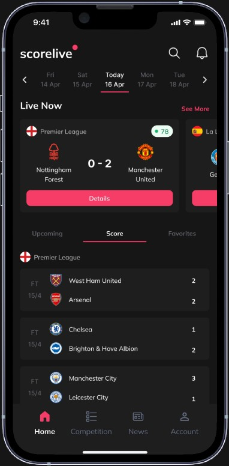
Home — date rail, Live Now, stacked scores
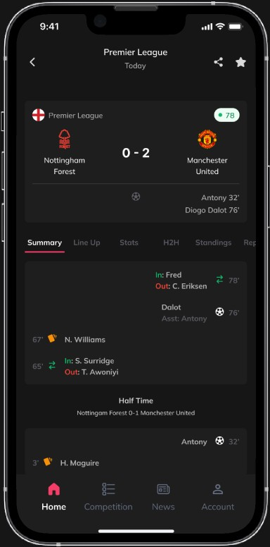
Match — sticky board + newest-first timeline
Cropped screens — Livesoccer (Ravenzu)
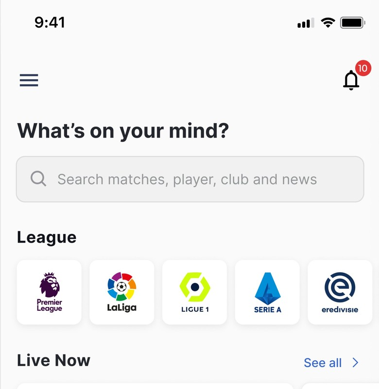
Home (top) — search + league scroller
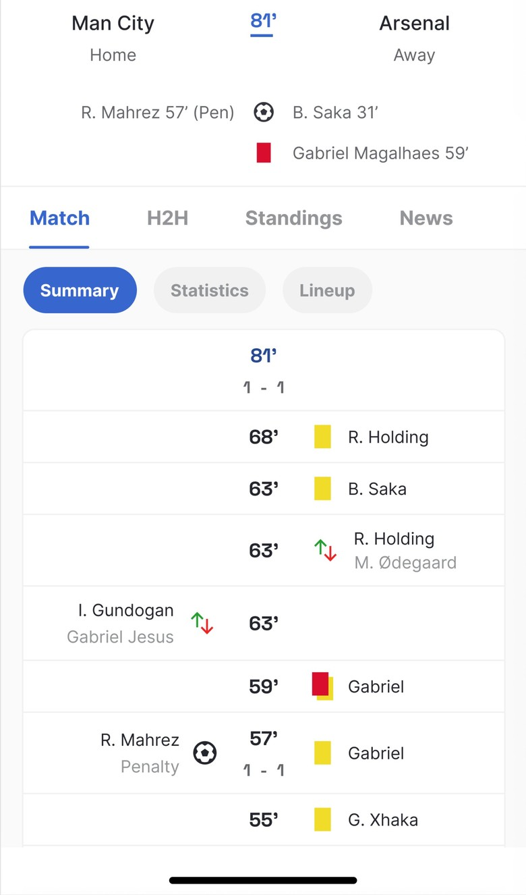
Match summary — split home/away timeline
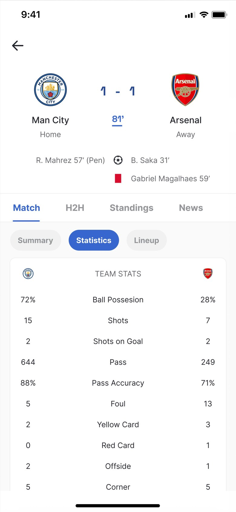
Statistics — dual values around the label
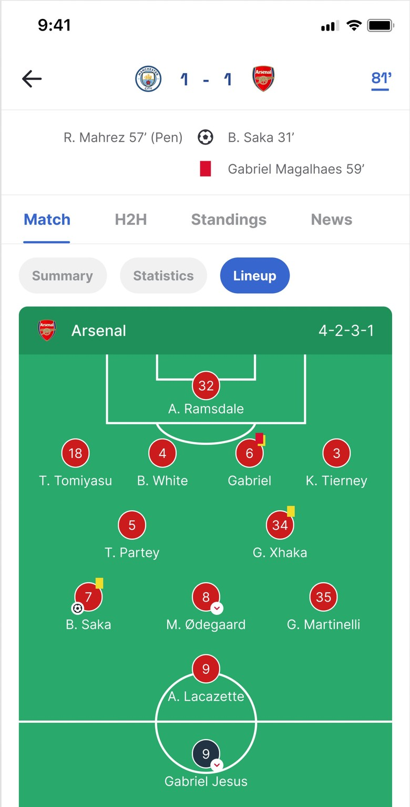
Lineup — formation on a pitch
Community covers (context)
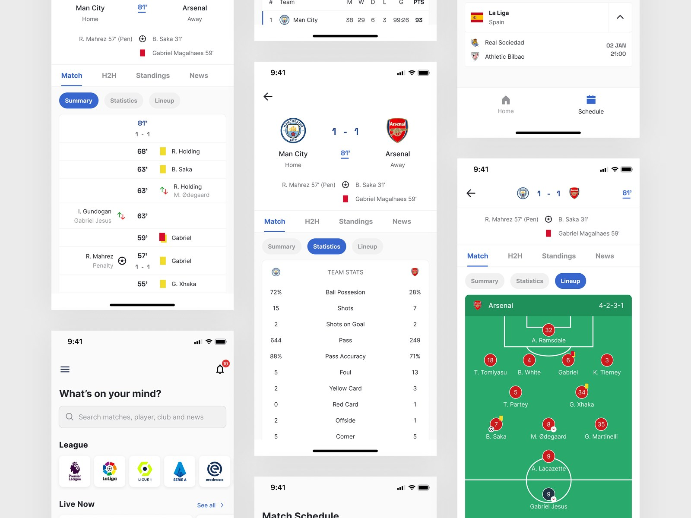
Livesoccer — Ravenzu
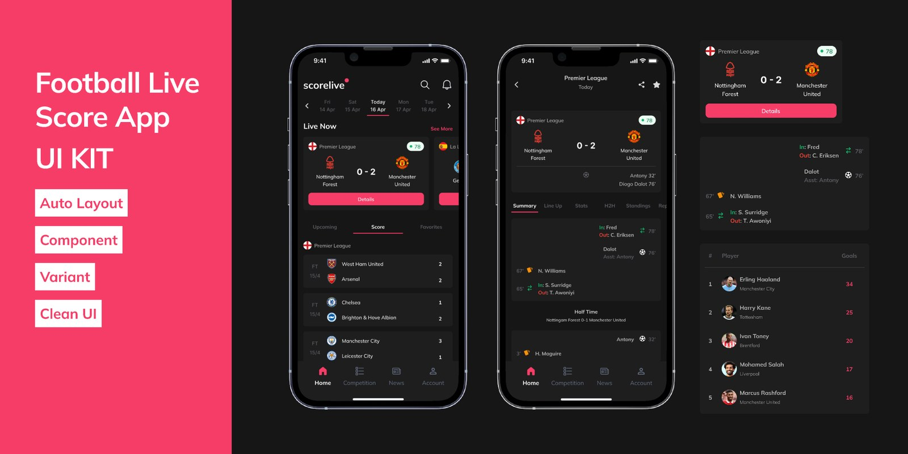
Live Score App UI Kit — Ariq Alsina
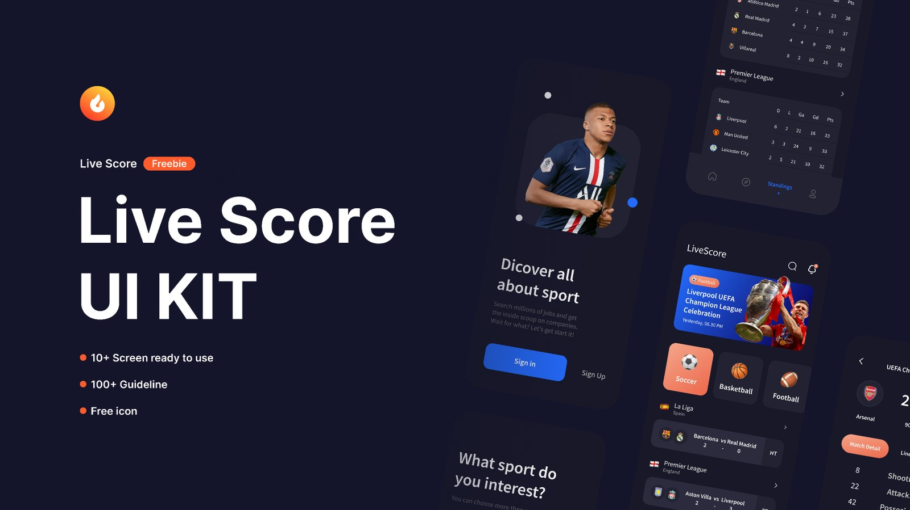
Live Score UI KIT — Odama Studio
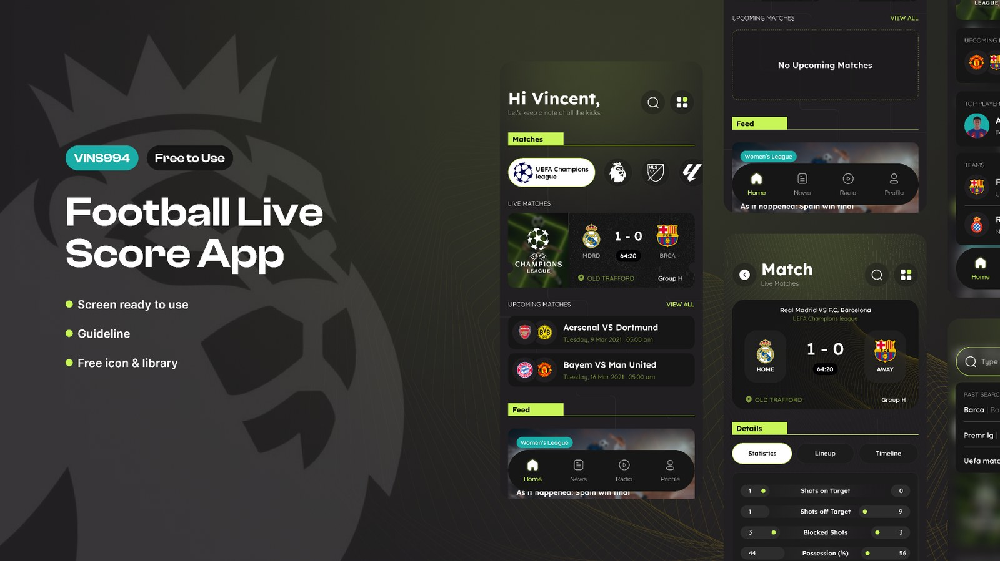
Soccer Score App
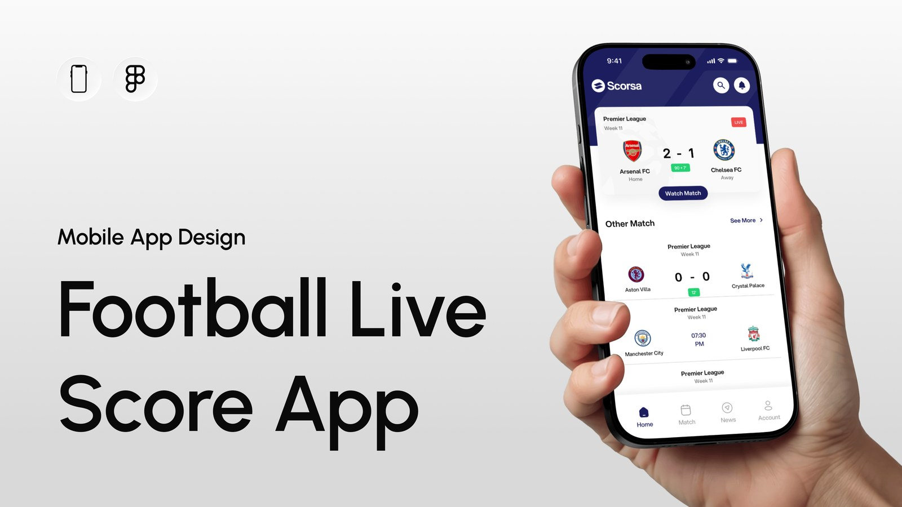
Football Live Score App — Maariz
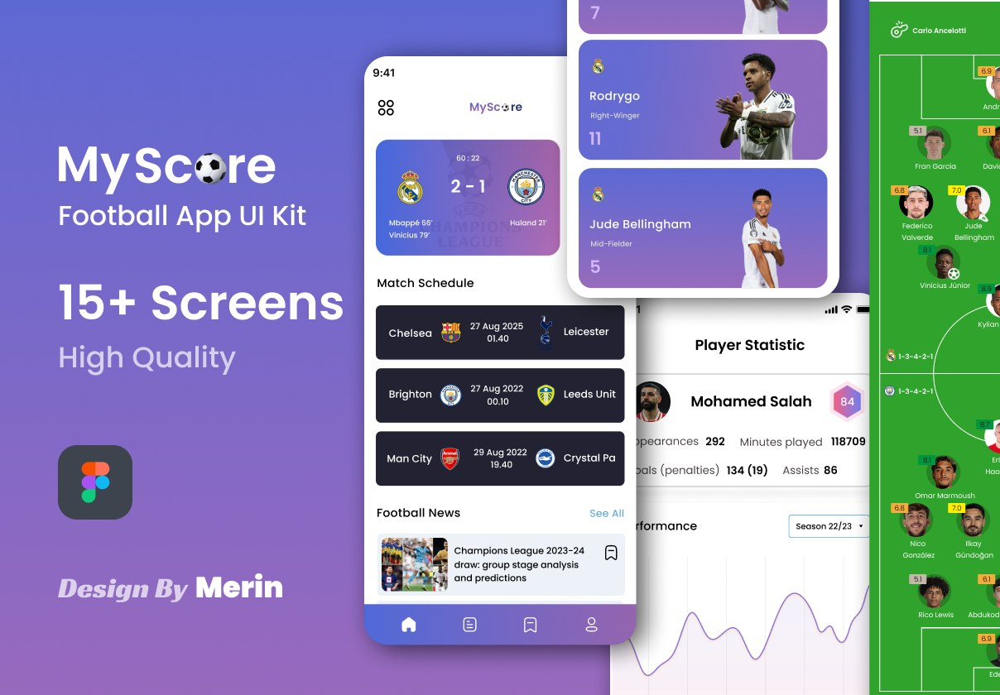
MyScore — Merin